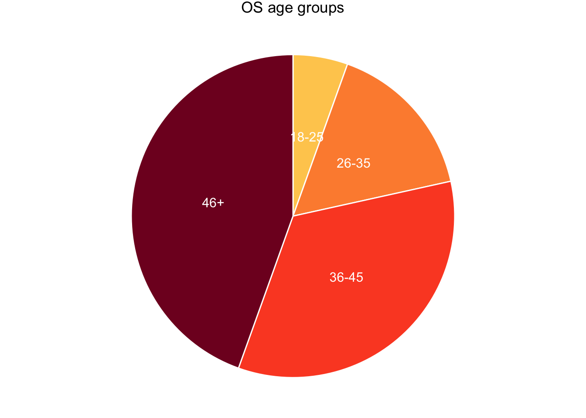
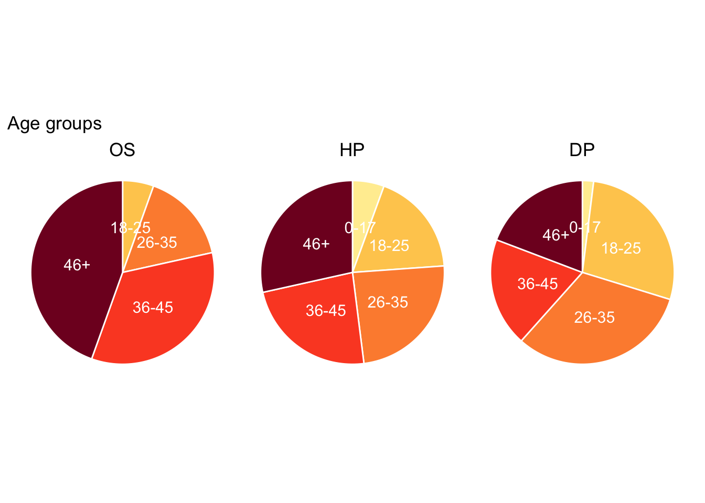

Processing gender and age data in the Skin and Bone collections
Author
Sharon Howard
Published
21 April 2025
Introduction
The Skin and Bone project data contains two kinds of biographical information, sex/gender and age, that are consistent enough across collections to be useful for comparison. However, they need some standardisation to enable meaningful analysis and visualisations. There are some variations in recording of the gender data, and ages need to be grouped.
Age groups
This was effectively pre-determined by broad age categories used in the osteological (OS) collection, where ages are unrecorded and have to be estimated from analysis of the skeletons (Mant thesis p.58).
Young Adult (YA) = 18-25 years
Middle Adult 1 (MA1) = 26-35 years
Middle Adult 2 (MA2) = 36-45 years
Old Adult (OA) = 46+ years
Adult = >18 years
A group for children (0-17) was added for the hospital (HP) and Digital Panopticon criminals (DP) collections, as children were excluded from the osteological data, and the “Adult” category was turned into “Unknown” (since it can’t be assumed in HP and DP that someone without a recorded age is an adult).
A high proportion of DP records have age information, but it needs a little bit of preprocessing because for some reason R decides to import the age column as character rather than numeric data.
Gender was assigned in the skeletons data on the basis of physical characteristics, whereas in HP and DP it was done on the basis of first names. In either case, it’s essentially probabilistic.
Values in the gender data across the collections haven’t been standardised and they’re all slightly different.
Pie charts are a bit controversial. But I like them in certain cases. They’re also really easy to make in {ggplot}. Essentially, you start by making a bar chart and then turn it into a circle using the coord_polar() function.
Age groups
I opted to use a sequential colour scale, which I wouldn’t normally do for categorical data, but age groups are a special case (since they’re based on numerical data and do go from low to high).
I’d like to have consistent colours for these categories across analyses. With ggplot, the easiest way to have complete control of colours is to use the scale_*_manual() functions, with a paired vector. I can include all five groups (plus unknown) and ggplot won’t mind if some aren’t actually in the data; it’ll only complain if there’s a value in the data that isn’t included in the vector.
As you might expect of data based on skeletons from cemeteries, the largest group is the oldest. (But the younger groups are nonetheless considerably larger than they would be in a modern cemetery.)
os_injury_ages |>distinct(person_id, age_group) |>filter(age_group !="unknown") |>count(age_group) |>mutate(prop = n /sum(n)*100) |>mutate(ypos =cumsum(prop)-0.5*prop ) |>ggplot(aes(x="", y=prop, fill=age_group)) +geom_col(width =1, color="white", show.legend = F) +geom_text(aes(label = age_group), position =position_stack(vjust=0.5), color ="white", size=4) +# make it circularcoord_polar("y", start=0, direction =-1) +scale_fill_manual(values = col_age_groups5) +theme_void() +theme(plot.tag.position ="top" ) +labs(tag ="OS age groups")

Comparing the three collections, the 46+ group is a lot smaller in both HP and DP; in both cases, the age groups are more evenly distributed than in OS. In HP 46+ is clearly still the single largest group. In DP the largest group is 26-35, with 18-25 close behind, so pie chart critics might point out it’s not obvious which is larger. But I’d argue that’s fine, because the difference (about 3%) is too small to really matter. What I want to do is get a quick overview and comparison of the three collections, and that’s what this is good at.

Gender
Only OS has a significant proportion of unknowns. What’s most noticeable is that women are in the minority in all three collections - this would be expected in criminal datasets, but is more surprising in the other two.